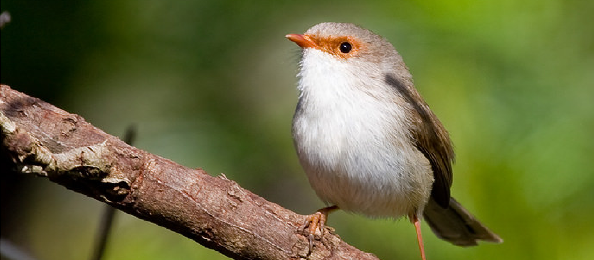

Over 660 species of songbirds are known to have female song, but recordings exist for only a fraction of them.

Which species to record?
Recordings and documentation of female bird song are needed from all geographic regions, but bird song recordings are especially scarce from the tropics and even more scarce from important biodiversity hotspots, such as Southeast Asia and the Amazon River Basin.
There are also many key species and families in temperate regions that will help us fill crucial gaps toward understanding how male and female songs have evolved. Below are lists of target species and families covering a wide range of geographic areas. Or download the complete list of species and families for which we need female song recordings.
For complete sampling, we greatly encourage recording both females and males from the same location around the same date/time. Bird songs are known to vary geographically and many songbirds even have dialects (distinct boundaries between song types of adjacent populations due to song learning). Songs of a single species from one area may differ drastically from a songs recorded in another area. For this reason, it is very important to capture geographic variation.
Little is known about seasonal variation in male and female songs, therefore capturing variation throughout the year is also important. Especially in the tropics where birds can sing year-round, gathering recordings inside and outside of the breeding season could reveal valuable information. Therefore, even recording a common bird from a location it has not been recorded previously, or during an atypical time of year represents a valuable contribution.
For our research, matched samples of males and females from the same geographic location and the same time of year are immensely valuable. Matched male and female samples allow us to most accurately and directly compare male and female songs by controlling for geographic or seasonal variation. Therefore, if you record a female bird, try to record a nearby male, as well. Submit both recordings and add a note to each submission indicating that the recordings go together (referencing the recording number of each in the notes of the other, and mentioning that it is a matched recording). Such matched recordings have great scientific value!
Click here to download the complete list of species for which we need female song recordings.
We are especially interested in songs of Oriental Magpie-Robins from Southeast Asia, so please record and upload their female songs.
Very little is known about female song in the following families, so they are also excellent target species!
Honeyeaters (Meliphagidae)
Thornbills (Acanthiza)
Monarchs & Flycatchers (Monarchidae)
Fantails (Rhipiduridae)
Woodswallows (Artamidae; subfamily Artaminae)
Batis & Wattle-eyes (Platysteiridae)
Drongos (Dicruridae)
Vangas (Vangidae)
Sunbirds (Nectariniidae)
Tits, Chickadees, and allies (Paridae)
Female song is common in the following families (and subfamilies), so recordings of any species within these families is helpful for studying female bird song. Under each family is a list of species in which females sing, but for which there are few or no recordings of female song (especially where which part the female sings is known). Therefore, recordings of female song for these species are especially helpful for filling gaps in biological collections.
Fairywrens and Grasswrens (Maluridae)
Lovely Fairywren (Malurus amabilis)
Purple-crowned Fairywren (Malurus coronatus)
Red-winged Fairywren (Malurus elegans)
Variegated Fairywren (Malurus lamberti)
White-winged Fairywren (Malurus leucopterus)
Eyrean Grasswren (Amytornis goyderi)
Black Grasswren (Amytornis housei)
Dusky Grasswren (Amytornis purnelli)
Striated Grasswren (Amytornis striatus)
White-throated Grasswren (Amytornis woodwardi)
Cuckooshrikes (Campephagidae)
Boyer's Cuckooshrike (Coracina boyeri)
Stout-billed Cuckooshrike (Coracina caeruleogrisea)
Yellow-eyed Cuckooshrike (Coracina lineata)
Black-bellied Cuckooshrike (Coracina montana)
Slaty Cuckooshrike (Coracina schistacea)
Grey-headed Cuckooshrike (Coracina schisticeps)
Slender-billed Cicadabird (Coracina tenuirostris)
Mauritius Cuckooshrike (Coracina typica)
Butcherbirds and allies (Artamidae; subfamily Cracticinae)
Hooded Butcherbird (Cracticus cassicus)
Black-backed Butcherbird (Cracticus mentalis)
Pied Butcherbird (Cracticus nigrogularis)
Black Butcherbird (Cracticus quoyi)
Grey Butcherbird (Cracticus torquatus)
Black Currawong (Strepera fuliginosa)
Pied Currawong (Strepera graculina)
Bush-shrikes, Boubous, and Gonoleks (Malaconotidae)
Gabon Boubou (Laniarius bicolor)
Black-headed Gonolek (Laniarius erythrogaster)
Fuelleborn's Boubou (Laniarius fuelleborni)
Sooty Boubou (Laniarius leucorhynchus)
Luehder's Bush-shrike (Laniarius luehderi)
Papyrus Gonolek (Laniarius mufumbiri)
Mountain Boubou (Laniarius poensis)
Red-naped Bush-shrike (Laniarius ruficeps)
Grey-headed Bush-shrike (Malaconotus blanchoti)
Lagden's Bush-shrike (Malaconotus lagdeni)
Whistlers (Pachycephalidae)
Hooded Whistler (Pachycephala implicata)
Gilbert's Whistler (Pachycephala inornata)
White-breasted Whistler (Pachycephala lanioides)
Golden Whistler (Pachycephala pectoralis)
Rufous Whistler (Pachycephala rufiventris)
Apalises and Cisticolas (Cisticolidae)
Masked Apalis (Apalis binotata)
Chapin's Apalis (Apalis chapini)
White-winged Apalis (Apalis chariessa)
Chirinda Apalis (Apalis chirindensis)
Yellow-throated Apalis (Apalis flavigularis)
Black-throated Apalis (Apalis jacksoni)
Karamoja Apalis (Apalis karamojae)
Chestnut-throated Apalis (Apalis porphyrolaema)
Rudd's Apalis (Apalis ruddi)
Buff-throated Apalis (Apalis rufogularis)
Sharpe's Apalis (Apalis sharpii)
Bar-throated Apalis (Apalis thoracica)
Singing Cisticola (Cisticola cantans)
Red-faced Cisticola (Cisticola erythrops)
Hunter's Cisticola (Cisticola hunteri)
Black-lored Cisticola (Cisticola nigriloris)
Euphonias (Fringillidae, subfamily Euphoniinae)
Tawny-capped Euphonia (Euphonia anneae)
Purple-throated Euphonia (Euphonia chlorotica)
Velvet-fronted Euphonia (Euphonia concinna)
Golden-rumped Euphonia (Euphonia cyanocephala)
Elegant Euphonia (Euphonia elegantissima)
Thick-billed Euphonia (Euphonia laniirostris)
Yellow-crowned Euphonia (Euphonia luteicapilla)
White-vented Euphonia (Euphonia minuta)
Rufous-bellied Euphonia (Euphonia rufiventris)
New World Orioles, Blackbirds and Caciques (Icteridae)
Audubon's Oriole (Icterus graduacauda)
Baltimore Oriole (Icterus galbula)
Bullock's Oriole (Icterus bullockii)
Hooded Oriole (Icterus cucullatus)
Scott's Oriole (Icterus parisorum)
Cuban Oriole (Icterus melanopsis)
Hispaniolan Oriole (Icterus dominicensis)
Jamaican Oriole (Icterus leucopteryx)
Montserrat Oriole (Icterus oberi)
Epaulet Oriole (Icterus cayanensis)
Yellow-backed Oriole (Icterus chrysater)
Yellow-tailed Oriole (Icterus mesomelas)
Yellow Oriole (Icterus nigrogularis)
Spot-breasted Oriole (Icterus pectoralis)
Orange-backed Troupial (Icterus croconotus)
Campo Troupial (Icterus jamacaii)
Golden-winged Cacique (Cacicus chrysopterus)
Casqued Cacique (Cacicus oseryi)
Solitary Black Cacique (Cacicus solitarius)
Scarlet-rumped Cacique (Cacicus uropygialis)
Cuban Blackbird (Dives atroviolaceus)
Melodious Blackbird (Dives dives)
Scrub Blackbird (Dives warszewiczi)
Boat-tailed Grackle (Quiscalus major)
Great-tailed Grackle (Quiscalus mexicanus)
Greater Antillean Grackle (Quiscalus niger)
---